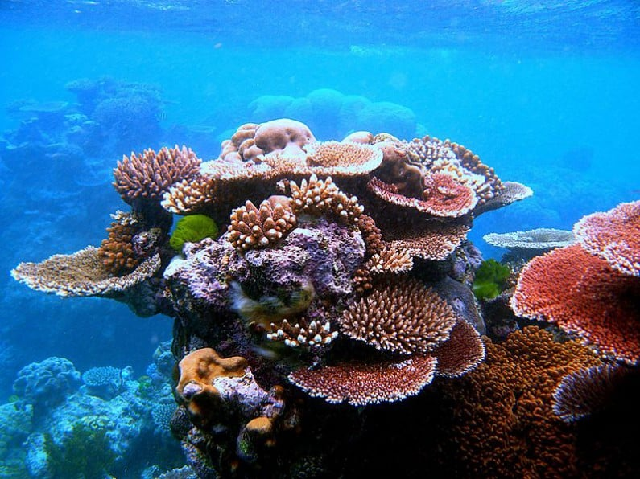

Animals in Sri Lanka
Indigenous animals in Sri Lanka
Sri Lanka, an island nation in South Asia, boasts a rich biodiversity that includes a variety of indigenous animals. The country's diverse ecosystems, ranging from lush rainforests to coastal habitats, provide habitats for a unique array of wildlife.
- The Sri Lankan elephant, a subspecies of the Asian elephant, is an iconic and revered species. These elephants inhabit various habitats, including national parks and forested areas.
- The Sri Lankan leopard is a sub-species of leopard found only on the island. Known for its distinctive appearance and adaptability, it is one of the top predators in Sri Lanka.
- the purple-faced leaf monkey, this primate species is endemic to Sri Lanka. It resides in the country's rainforests and is recognized by its distinctive purple face.
- The sloth bear is native to Sri Lanka and is primarily found in dry and arid regions. These bears are known for their unique appearance and feeding habits.
- The sambar deer is one of the largest deer species and is widespread in Sri Lanka. It inhabits various habitats, including forests and grasslands.


Explore more...
Sri Lanka is home to a diverse array of wildlife, with a rich biodiversity that includes various mammals, birds, reptiles, amphibians, and marine species.You can explore more about them in ;
Marine Life is Sri Lanka
Sri Lanka, with its extensive coastline and diverse marine environments, is home to a rich array of marine life. Sri Lanka is one of the best places in the world for spotting blue whales.
Sri Lanka's coastal areas are home to vibrant coral reefs, hosting a diverse range of marine life. Coral reefs are essential ecosystems that support numerous fish species, invertebrates, and provide critical breeding grounds. The coral reefs around Sri Lanka are teeming with colorful reef fish. Diverse species such as parrotfish, angelfish, butterflyfish, and many others contribute to the vibrant underwater ecosystem.
Sri Lanka's marine biodiversity is a crucial component of the island's natural heritage, attracting marine enthusiasts, divers, and researchers from around the world.
